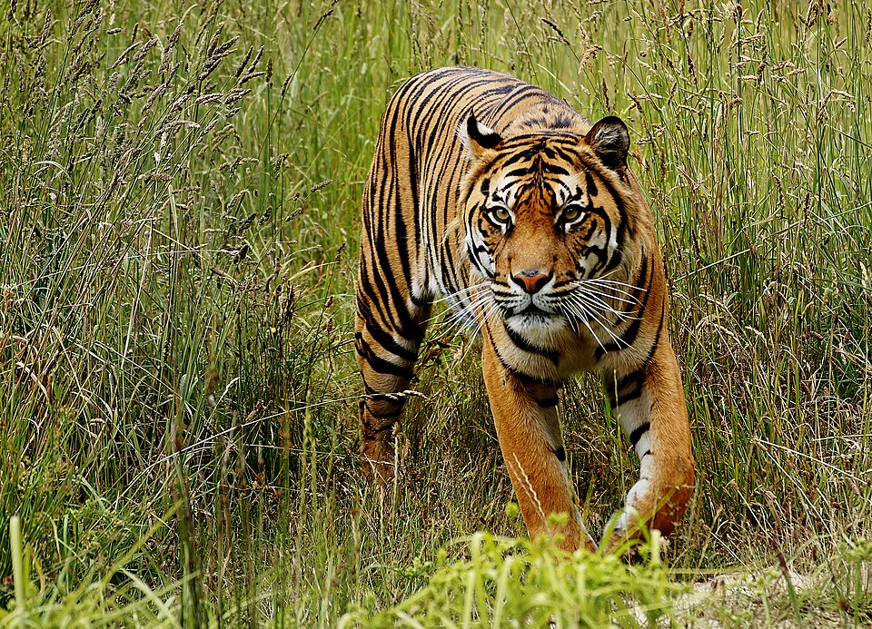

Tigre de Sumatra (Panthera tigris sumatrae)


Estado de conservação: Em Perigo Crítico (CR). É a situação mais extrema da lista vermelha, estima-se que existam menos de 400 a 600 indivíduos soltos no planeta.
Habitat: Exclusivo da Ilha de Sumatra, na Indonésia. Vive desde florestas tropicais de planície e pântanos de turfa até florestas montanhosas de altitude.
Alimentação: Carnívoro, caça veados, javalis, antas, macacos e, ocasionalmente, até pequenos répteis ou aves.
Principais ameaças:
- Desmatamento e óleo de palma: A destruição massiva das florestas para dar lugar a plantações de palma de óleo.
- Caça ilegal: Caçados pelo comércio clandestino de suas peles, ossos e dentes para a medicina tradicional.
- Conflito com humanos: Com o habitat encolhendo, eles acabam cruzando com vilarejos e podendo ser mortos pela população local.
Curiosidades do Tigre-de-Sumatra:
- Menor Tigre: É a menor de todas as subespécies vivas de tigre. Essa versão "compacta" é uma adaptação para conseguir se esgueirar pela vegetação densa da selva.
- Listras camufladas e juntas: As listras pretas dele são mais finas e muito mais próximas umas das outras do que as de outros tigres, ajudando a se misturar perfeitamente com as sombras das folhas.
- Ótimo Nadador: Suas patas têm membranas parciais entre os dedos que o tornam um nadador excepcional — ele inclusive encurrala presas na água quando tem a chance.
- Juba: Os machos têm uma "juba" de pelos ao redor do pescoço bem mais proeminente que os outros tigres.